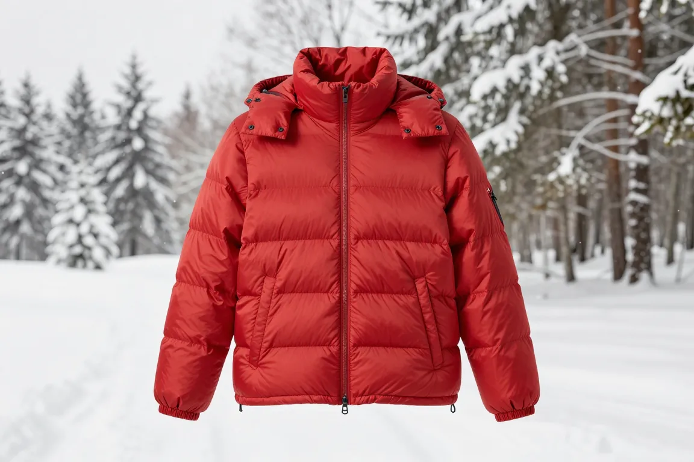

Стёганая пуховая верхняя одежда
мода · 1936–now · также: Пуховая куртка, Пуффер, Пуховик с перегородками
Куртка, держащая тёплое облако гусиного пуха в рядах прошитых ячеек; первую сделал Эдди Бауэр в Сиэтле в 1936 году.

Главная идея
Тепло даёт запертый воздух. Зашейте пух в перегородки, не дающие ему сползать, и куртка даст больше всего тепла при наименьшем весе.
Принципы дизайна
- Шейте ячейки рядами шириной 8–15 см, чтобы пух не уходил вниз.
- Наполняйте каждую ячейку 90–230 г гусиного пуха в зависимости от холода, с которым куртке встречаться.
- Выбирайте оболочку 20–70 г на квадратный метр, достаточно плотную, чтобы держать пух.
- Окантовывайте манжету и подол эластиком, чтобы запереть тёплый воздух.
- Кройте капюшон и воротник так, чтобы они закрывались до подбородка.
- Добавляйте молнию с ветрозащитной планкой, закрывающей сквозняк.
- Прошивайте каждую перегородку насквозь до стенки, а не до оболочки, чтобы убрать холодные пятна.
Антипаттерны
- Тонкая свободная оболочка, из которой выходит пух
- Строчки насквозь без стенки перегородки
- Мокрая плоская куртка, потерявшая объём
- Голые незакрытые швы на локте
- Короткая куртка, оставляющая открытой поясницу
Палитра
Родословная
- Развился из
- Ранний альпинизм
Использовать
SKILL.md · tokens.css · исходный JSON · открыть в демо